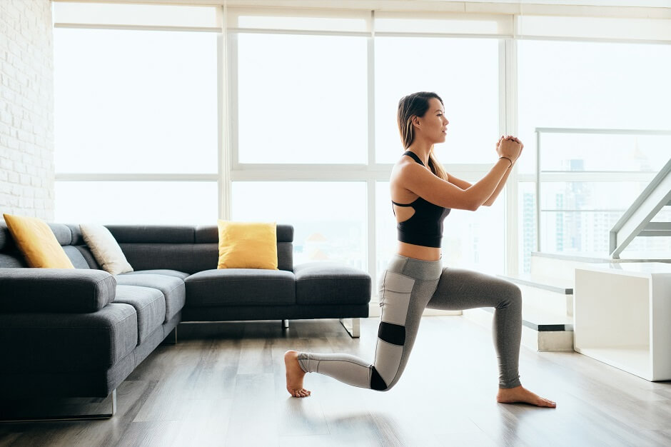

a cadeira extensora é um exercicio que trabalha principalmente os músculos das penas, conhecido por quadriceps.
Agachamento é um exercicio que ajuda a fortalecer os músculos das pernas também dos glúteos.
leg press é um equipamento de exercicio usado para trabalhar os músculos do corpo inefrior.
O afundo é um exercicio unilateral e multiarticular que envolve vários músculos e do bombum.
